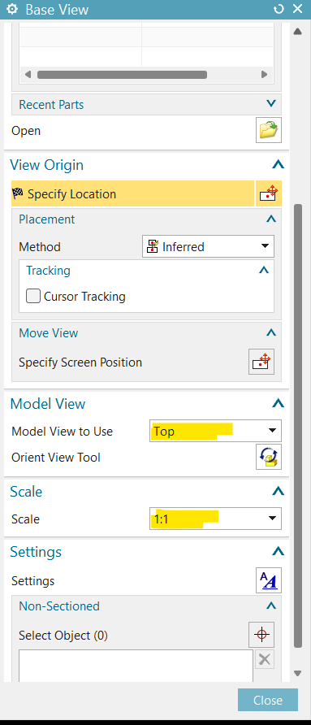

Base View
Below code generate base view in the sheet
using NXOpen;
namespace BaseView
{
public class BaseView
{
public static void Main(string[] args)
{
Session theSession = Session.GetSession();
Part workPart = theSession.Parts.Work;
string partName = ""; // Specify part name
double Scale = 5;
// Call Create base view Function
CreateBaseView(partName, Scale, new Point3d(50,50,0));
}
public static void CreateBaseView(string PartName, double scale, Point3d Location)
{
Session theSession = Session.GetSession();
Part workPart = theSession.Parts.Work;
NXOpen.Session.UndoMarkId markId1;
markId1 = theSession.SetUndoMark(NXOpen.Session.MarkVisibility.Visible, "Start");
NXOpen.Drawings.BaseView nullNXOpen_Drawings_BaseView = null;
NXOpen.Drawings.BaseViewBuilder baseViewBuilder1;
baseViewBuilder1 = workPart.DraftingViews.CreateBaseViewBuilder(nullNXOpen_Drawings_BaseView);
baseViewBuilder1.Placement.Associative = true;
NXOpen.ModelingView modelingView1 = (NXOpen.ModelingView)workPart.ModelingViews.FindObject("Left");
baseViewBuilder1.SelectModelView.SelectedView = modelingView1;
baseViewBuilder1.SecondaryComponents.ObjectType = NXOpen.Drawings.DraftingComponentSelectionBuilder.Geometry.PrimaryGeometry;
theSession.SetUndoMarkName(markId1, "Base View Dialog");
baseViewBuilder1.Scale.Numerator = scale;
baseViewBuilder1.Style.ViewStyleBase.Part = workPart;
baseViewBuilder1.Style.ViewStyleBase.PartName = PartName;
bool loadStatus1;
loadStatus1 = workPart.IsFullyLoaded;
baseViewBuilder1.SelectModelView.SelectedView = modelingView1;
NXOpen.Direction nullNXOpen_Direction = null;
baseViewBuilder1.Style.ViewStyleOrientation.Ovt.XDirection = nullNXOpen_Direction;
baseViewBuilder1.SelectModelView.SelectedView = modelingView1;
NXOpen.Assemblies.Arrangement nullNXOpen_Assemblies_Arrangement = null;
baseViewBuilder1.Style.ViewStyleBase.Arrangement.SelectedArrangement = nullNXOpen_Assemblies_Arrangement;
baseViewBuilder1.Style.ViewStyleBase.Arrangement.InheritArrangementFromParent = false;
baseViewBuilder1.Placement.Placement.SetValue(null, workPart.Views.WorkView, Location);
NXOpen.NXObject nXObject1;
nXObject1 = baseViewBuilder1.Commit();
theSession.SetUndoMarkName(markId1, "Base View");
baseViewBuilder1.Destroy();
}
public static int GetUnloadOption(string args)
{
return (int)NXOpen.Session.LibraryUnloadOption.Immediately;
}
}
}
